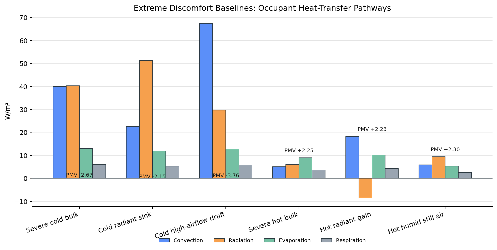
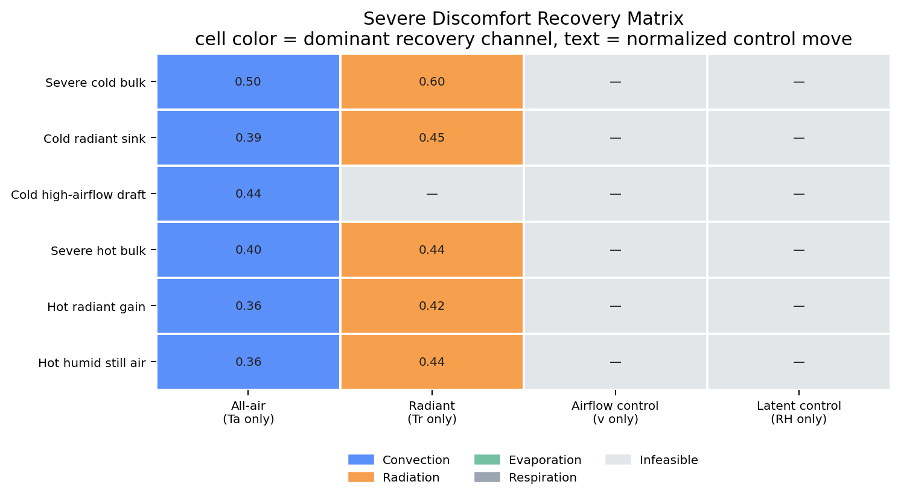
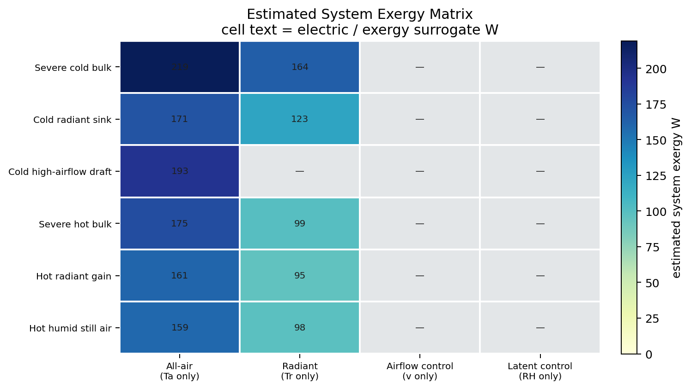

This branch pushes the mechanism study into clearly severe states. Every baseline scenario is selected so the representative office occupant begins at |PMV| ≥ 2.0, which makes the discomfort signal unambiguous before any recovery logic is tested. The question is then practical rather than abstract: once the occupant is plainly too cold or too hot, which single environmental lever recovers comfort most directly, and through which pathway watts?
One representative seated office occupant is evaluated with the repo's existing ISO 7730 PMV engine. Six severe discomfort archetypes are constructed so that each baseline state sits at or beyond |PMV| ≥ 2.0: bulk cold, radiant cold, convective cold, bulk hot, radiant hot, and hot-humid still air. Each state is then tested against four bounded single-lever interventions: air temperature only, mean radiant temperature only, airflow only, and humidity only. Recovery is defined by |PMV| ≤ 0.5. A second layer then estimates system-side actuation using a canonical office control-zone surrogate: 50 L/s supply air for the all-air lever, a 12 m² radiant panel with h_r = 4.7 W/m²K for the radiant lever, cubic fan power for airflow, and latent load from humidity-ratio change for the humidity lever. Reported exergy is the estimated electric/input work after applying simplified COP assumptions.
| All-air sensible control | Q = ρ c_p V̇ |ΔTa| with V̇ = 0.05 m³/s, heating/cooling COP = 3.0 |
|---|---|
| Radiant sensible control | Q = h_r A |ΔTr| with A = 12 m², h_r = 4.7 W/m²K, heating COP = 4.5, cooling COP = 5.5 |
| Airflow control | Fan power surrogate P ∝ v³ with 60 W at 1.2 m/s |
| Humidity control | Q = ṁ h_fg |ΔW| from humidity-ratio change, dehumidification COP = 1.8, humidification COP = 1.0 |
This is intentionally a system surrogate, not a full HVAC plant model. It exists to keep numeric input displacement from being misread as true plant effort.

Reference office = Ta=25.5 C, Tr=25.5 C, RH=50%, v=0.10 m/s, PMV=-0.22
The figure at left shows the actual heat-balance decomposition for each severe baseline. This matters because the states are not interchangeable. Some are dominated by elevated radiative loss, others by excessive convective loss, and hot radiant gain is the only case where the radiative term reverses sign and becomes net heat gain to the body.
| Scenario | Mechanism | Ta | Tr | RH | v | PMV | PPD | Largest absolute pathway | Signed note |
|---|---|---|---|---|---|---|---|---|---|
| Severe cold bulk | bulk cold | 19.0 | 19.0 | 50 | 0.10 | -2.67 | 96.4 | radiation | radiative loss |
| Cold radiant sink | radiant cold | 23.0 | 17.0 | 50 | 0.10 | -2.15 | 83.1 | radiation | radiative loss |
| Cold high-airflow draft | convective cold | 20.0 | 20.0 | 50 | 0.60 | -3.76 | 100.0 | convection | convective loss |
| Severe hot bulk | bulk hot | 32.0 | 32.0 | 50 | 0.10 | 2.25 | 86.6 | evaporation | evaporative loss |
| Hot radiant gain | radiant hot | 29.0 | 35.0 | 50 | 0.10 | 2.23 | 85.9 | convection | convective loss |
| Hot humid still air | humid hot | 31.0 | 31.0 | 80 | 0.05 | 2.30 | 88.2 | radiation | radiative loss |
| Scenario | Winning lever | Normalized control move | Dominant channel | PMV | PPD |
|---|---|---|---|---|---|
| Severe cold bulk | All-air (Ta only) | 0.495 | convection | -2.67 → -0.48 | 96.4% → 9.8% |
| Cold radiant sink | All-air (Ta only) | 0.386 | convection | -2.15 → -0.49 | 83.1% → 10.0% |
| Cold high-airflow draft | All-air (Ta only) | 0.436 | convection | -3.76 → -0.48 | 100.0% → 9.9% |
| Severe hot bulk | All-air (Ta only) | 0.395 | convection | 2.25 → 0.49 | 86.6% → 10.0% |
| Hot radiant gain | All-air (Ta only) | 0.364 | convection | 2.23 → 0.50 | 85.9% → 10.1% |
| Hot humid still air | All-air (Ta only) | 0.359 | convection | 2.30 → 0.49 | 88.2% → 10.0% |
| Scenario | Winning lever | Estimated exergy | System mode | Normalized control move | PMV |
|---|---|---|---|---|---|
| Severe cold bulk | Radiant (Tr only) | 164.2 | radiant heating | 0.595 | -2.67 → -0.49 |
| Cold radiant sink | Radiant (Tr only) | 122.8 | radiant heating | 0.445 | -2.15 → -0.49 |
| Cold high-airflow draft | All-air (Ta only) | 193.2 | air heating | 0.436 | -3.76 → -0.48 |
| Severe hot bulk | Radiant (Tr only) | 99.5 | radiant cooling | 0.441 | 2.25 → 0.50 |
| Hot radiant gain | Radiant (Tr only) | 95.4 | radiant cooling | 0.423 | 2.23 → 0.50 |
| Hot humid still air | Radiant (Tr only) | 98.4 | radiant cooling | 0.436 | 2.30 → 0.49 |

The matrix condenses the single-lever recovery study. Every cell asks whether one control variable alone can drag the occupant from a clearly severe state back to |PMV| ≤ 0.5. The cell color identifies the dominant pathway change in that recovery, while the overlaid number gives the smallest normalized control move found in the bounded search.

This second matrix uses the same feasible recoveries, but ranks them by estimated system exergy rather than by normalized input displacement. That is the distinction the original report was missing: changing Tr by one degree is not assumed to have the same plant implication as changing Ta by one degree.
Each scenario below keeps three things visible at once: the severe baseline state, which single-lever controls are actually feasible, and which pathway does the real work when recovery is possible.
Uniform cold room where both air and radiant temperatures are depressed.
Ta=19.0 C, Tr=19.0 C, RH=50%, v=0.10 m/s, PMV=-2.67, PPD=96.4%
Mechanism class: bulk cold. Largest absolute pathway = radiative loss. Shortest feasible path: All-air (Ta only) (0.495 normalized control move, dominant channel convection). Lowest estimated system exergy: Radiant (Tr only) (164.2 W electric/exergy surrogate, mode radiant heating).
| Lever | Feasible | Minimum control move | Normalized control move | Estimated exergy | Estimated thermal delivery | PMV recovery | PPD recovery | Dominant recovery channel |
|---|---|---|---|---|---|---|---|---|
| All-air (Ta only) | yes | +10.90 C | 0.495 | 219.3 W | 657.9 W | -2.67 → -0.48 | 96.4% → 9.8% | convection |
| Radiant (Tr only) | yes | +13.10 C | 0.595 | 164.2 W | 738.8 W | -2.67 → -0.49 | 96.4% → 10.1% | radiation |
| Airflow control (v only) | no | — | — | — | — | -2.67 → — | 96.4% → — | — |
| Latent control (RH only) | no | — | — | — | — | -2.67 → — | 96.4% → — | — |
Moderate air temperature with markedly colder surrounding surfaces.
Ta=23.0 C, Tr=17.0 C, RH=50%, v=0.10 m/s, PMV=-2.15, PPD=83.1%
Mechanism class: radiant cold. Largest absolute pathway = radiative loss. Shortest feasible path: All-air (Ta only) (0.386 normalized control move, dominant channel convection). Lowest estimated system exergy: Radiant (Tr only) (122.8 W electric/exergy surrogate, mode radiant heating).
| Lever | Feasible | Minimum control move | Normalized control move | Estimated exergy | Estimated thermal delivery | PMV recovery | PPD recovery | Dominant recovery channel |
|---|---|---|---|---|---|---|---|---|
| All-air (Ta only) | yes | +8.50 C | 0.386 | 171.0 W | 513.1 W | -2.15 → -0.49 | 83.1% → 10.0% | convection |
| Radiant (Tr only) | yes | +9.80 C | 0.445 | 122.8 W | 552.7 W | -2.15 → -0.49 | 83.1% → 10.0% | radiation |
| Airflow control (v only) | no | — | — | — | — | -2.15 → — | 83.1% → — | — |
| Latent control (RH only) | no | — | — | — | — | -2.15 → — | 83.1% → — | — |
Cool room where elevated air speed pushes the occupant into strong convective heat loss.
Ta=20.0 C, Tr=20.0 C, RH=50%, v=0.60 m/s, PMV=-3.76, PPD=100.0%
Mechanism class: convective cold. Largest absolute pathway = convective loss. Shortest feasible path: All-air (Ta only) (0.436 normalized control move, dominant channel convection). Lowest estimated system exergy: All-air (Ta only) (193.2 W electric/exergy surrogate, mode air heating).
| Lever | Feasible | Minimum control move | Normalized control move | Estimated exergy | Estimated thermal delivery | PMV recovery | PPD recovery | Dominant recovery channel |
|---|---|---|---|---|---|---|---|---|
| All-air (Ta only) | yes | +9.60 C | 0.436 | 193.2 W | 579.5 W | -3.76 → -0.48 | 100.0% → 9.9% | convection |
| Radiant (Tr only) | no | — | — | — | — | -3.76 → — | 100.0% → — | — |
| Airflow control (v only) | no | — | — | — | — | -3.76 → — | 100.0% → — | — |
| Latent control (RH only) | no | — | — | — | — | -3.76 → — | 100.0% → — | — |
Uniform hot room where both air and radiant temperatures are elevated.
Ta=32.0 C, Tr=32.0 C, RH=50%, v=0.10 m/s, PMV=2.25, PPD=86.6%
Mechanism class: bulk hot. Largest absolute pathway = evaporative loss. Shortest feasible path: All-air (Ta only) (0.395 normalized control move, dominant channel convection). Lowest estimated system exergy: Radiant (Tr only) (99.5 W electric/exergy surrogate, mode radiant cooling).
| Lever | Feasible | Minimum control move | Normalized control move | Estimated exergy | Estimated thermal delivery | PMV recovery | PPD recovery | Dominant recovery channel |
|---|---|---|---|---|---|---|---|---|
| All-air (Ta only) | yes | -8.70 C | 0.395 | 175.0 W | 525.1 W | 2.25 → 0.49 | 86.6% → 10.0% | convection |
| Radiant (Tr only) | yes | -9.70 C | 0.441 | 99.5 W | 547.1 W | 2.25 → 0.50 | 86.6% → 10.2% | radiation |
| Airflow control (v only) | no | — | — | — | — | 2.25 → — | 86.6% → — | — |
| Latent control (RH only) | no | — | — | — | — | 2.25 → — | 86.6% → — | — |
Moderate air temperature with strongly overheated surrounding surfaces causing radiant heat gain.
Ta=29.0 C, Tr=35.0 C, RH=50%, v=0.10 m/s, PMV=2.23, PPD=85.9%
Mechanism class: radiant hot. Largest absolute pathway = convective loss. Shortest feasible path: All-air (Ta only) (0.364 normalized control move, dominant channel convection). Lowest estimated system exergy: Radiant (Tr only) (95.4 W electric/exergy surrogate, mode radiant cooling).
| Lever | Feasible | Minimum control move | Normalized control move | Estimated exergy | Estimated thermal delivery | PMV recovery | PPD recovery | Dominant recovery channel |
|---|---|---|---|---|---|---|---|---|
| All-air (Ta only) | yes | -8.00 C | 0.364 | 161.0 W | 482.9 W | 2.23 → 0.50 | 85.9% → 10.1% | convection |
| Radiant (Tr only) | yes | -9.30 C | 0.423 | 95.4 W | 524.5 W | 2.23 → 0.50 | 85.9% → 10.2% | radiation |
| Airflow control (v only) | no | — | — | — | — | 2.23 → — | 85.9% → — | — |
| Latent control (RH only) | no | — | — | — | — | 2.23 → — | 85.9% → — | — |
Hot-humid state with low air movement and suppressed evaporative relief.
Ta=31.0 C, Tr=31.0 C, RH=80%, v=0.05 m/s, PMV=2.30, PPD=88.2%
Mechanism class: humid hot. Largest absolute pathway = radiative loss. Shortest feasible path: All-air (Ta only) (0.359 normalized control move, dominant channel convection). Lowest estimated system exergy: Radiant (Tr only) (98.4 W electric/exergy surrogate, mode radiant cooling).
| Lever | Feasible | Minimum control move | Normalized control move | Estimated exergy | Estimated thermal delivery | PMV recovery | PPD recovery | Dominant recovery channel |
|---|---|---|---|---|---|---|---|---|
| All-air (Ta only) | yes | -7.90 C | 0.359 | 158.9 W | 476.8 W | 2.30 → 0.49 | 88.2% → 10.0% | convection |
| Radiant (Tr only) | yes | -9.60 C | 0.436 | 98.4 W | 541.4 W | 2.30 → 0.49 | 88.2% → 10.0% | radiation |
| Airflow control (v only) | no | — | — | — | — | 2.30 → — | 88.2% → — | — |
| Latent control (RH only) | no | — | — | — | — | 2.30 → — | 88.2% → — | — |